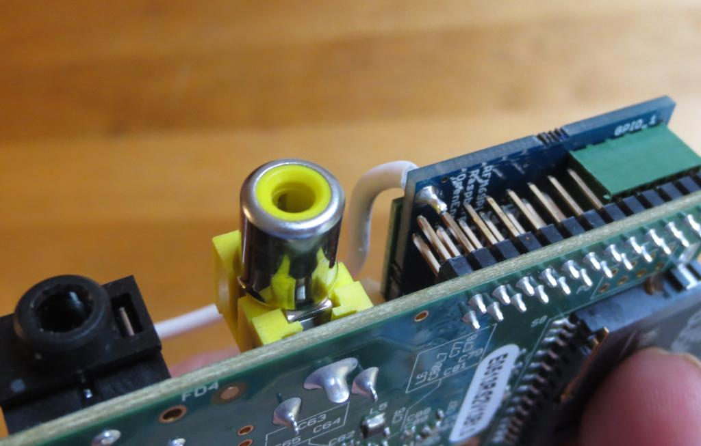

I've been messing around with all sorts of variations of Pi and rfm and have had intermittent connection issues, i.e. loss of packets etc.
Anyway, recently I noticed when I was stripping down one of the systems because of some long drop outs of data, that the rfm was actually sitting on the Pi connector at an angle. The reason for this was that the wire from the rfm module which is particularly thick, was forcing the module to sit at an angle when the Pi case was on.
So basically, putting the system into a Pi case was forcing the rfm module to sit at an angle due to the aerial wire.
It occurred to me that if the shop changed their build procedures and connected the aerial wire from the underside of the board, instead of the top side, this wouldn't be an issue.
Since I've moved the system and made sure that the rfm is seated correctly I haven't had any issues at all.
Trystan, Glyn, this would be an easy change and may possibly be the cause of some of the issues that have been seen recently with regard to comm drop outs. As you can imagine, it's easy to put everything together, make sure it's working, then put the Pi into a case and not realise that the rfm is not sitting squarely.
Simon
Re: aerial position on rfm modules and pi case physical interference
What do you mean by 'not sitting square'? Does your RFM module look like this?
Re: aerial position on rfm modules and pi case physical interference
I believe Simon is referring to the emonBase, and how the RFM69Pi module is at an angle on the Pi's GPIO connector.
On my emonBase, I've sanded down the solder on the bottom of the RFM69Pi module where the antenna wire attaches and put some electrical tape on it, just so it won't make contact with any of the other GPIO pins.
I've also bent the wire and put it completely inside the Pi case, because for my application, the emonTXes are directly next to it.
[That's how I read it too, emonBase, ie Raspberry Pi + RFM__Pi, NOT emonPi - RW]
Re: aerial position on rfm modules and pi case physical interference
It's a very valid point. This photo is of a spare module, and you can see how close it is to the Pi's GPIO pins (is it touching?)
On my working system, I used a dremel to grind the protruding wire down on the RFM69Pi to give some clearance, but I'm aware that others have snipped the GPIO pin.
Paul

Re: aerial position on rfm modules and pi case physical interference
I used a dremel to grind the protruding wire down on the RFM69Pi to give some clearance
Cutters like these work well too.
Re: aerial position on rfm modules and pi case physical interference
Interesting! I hadn't even thought of the protrusion of the aerial wire below the board catching on the pi header.
My issue is with the case forcing the rfm module to sit at an angle due to the low clearance between the case and the thick aerial wire.
I'm not home right now but will put things back together and take a photo to show what I mean. And this is for an emonbase not emonpi.
Simon
Re: aerial position on rfm modules and pi case physical interference
So finally managed to take a photo.
This is an rfm69 on a pi B. The case is pretty opaque, so I've only included a photo with the top off. I have an rfm12 as well but this doesn't have the same issue. The difference between them is that the 12 has a multi core aerial wire while the 69 has a solid core wire which is pretty chunky, so doesn't give and therefore forces the module down at the aerial end.
Anyway here's the photo after I've taken the case lid off.
Re: aerial position on rfm modules and pi case physical interference
I see what you mean, I had the same problem until I drilled a small hole in the case top and pulled the aerial wire up through it.
It improved my signal strength too!
Paul
Re: aerial position on rfm modules and pi case physical interference
Hi Paul, sadly my case was so opaque I didn't notice until I took the system down.
I think this should be one of the list of standard things to check if folks are having comms dropout when using an emonbase.
1 make sure that there is enough power to the system, especially if you are using a USB HDD.
2 check that the rfm module is seated correctly even when the case lid has been put on. A remedy for a stiff wire forcing the module down on one side is a hole in the case for the aerial. Also make sure the aerial wire on the underside of the board isn't making contact with the hat connector.
3......